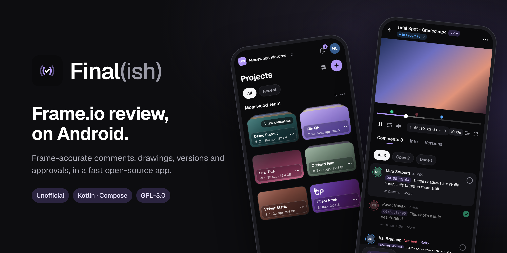

Final(ish): un’app Frame.io per Android
Final(ish) è un client Frame.io gratuito e open source per telefoni e tablet Android. Rivedi i video, lascia commenti con timecode e disegni, approva le versioni e condividi i link dal telefono. Frame.io non ha un’app Android ufficiale: Final(ish) usa l’API ufficiale Frame.io V4 e si accede con l’Adobe ID.

- Scarica l’APK (Android 8.0 o successivo)
- Codice sorgente e documentazione su GitHub
Cosa fa
- Naviga workspace, progetti, cartelle, version stack e collection
- Player video preciso al fotogramma con timecode, velocità, loop, maschere e picture-in-picture
- Commenti con timecode e su intervalli, disegni sul fotogramma, segna come fatto
- Immagini, PDF, audio e file Word, Excel e PowerPoint
- Stato, valutazione e campi metadati; confronto tra versioni affiancate o a tendina
- Link di condivisione, upload in background che riprendono, file e commenti offline
- Notifiche senza server, sei lingue, modalità demo senza account
Gratuita, senza pubblicità e senza tracciamento. Licenza GNU GPL v3.0.
Final(ish) non è affiliato, approvato né sponsorizzato da Adobe o Frame.io. Adobe e Frame.io sono marchi registrati o marchi di Adobe negli Stati Uniti e/o in altri paesi.